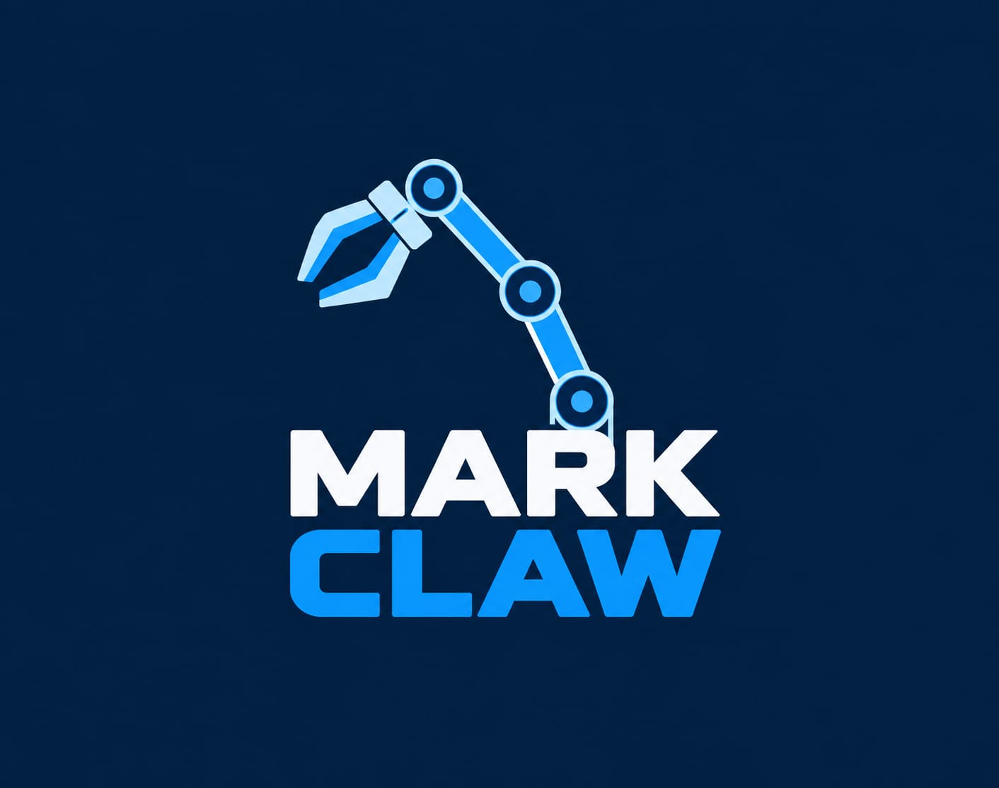

Feria de Ciencias · Expo-Tec 2026
MARK-CLAW
Manipulación robótica asistida por visión artificial para prácticas educativas más seguras.
Una garra robótica controlada mediante gestos de la mano. El sistema combina visión artificial local con una API de comunicación, una ESP32 y actuadores electromecánicos.
Robótica educativaMediaPipeAPI + Wi‑Fi

01 · Fundamentación
Situación problemática
En Argentina, las prácticas experimentales realizadas en instituciones educativas pueden presentar riesgos relacionados con la manipulación de sustancias químicas, materiales inflamables, objetos de vidrio y otros elementos que requieren medidas de seguridad adecuadas.
Estos riesgos pueden afectar a estudiantes y docentes, especialmente cuando no se cuenta con protocolos, equipamiento o sistemas adecuados para prevenir la exposición directa durante las actividades prácticas.
Antecedente relevante · Río Negro, marzo de 2025
Una estudiante de 12 años sufrió graves quemaduras en el rostro, cuero cabelludo y oreja durante un experimento escolar en el que se utilizaba alcohol. El caso llegó a la Justicia y señaló deficiencias vinculadas con las medidas de seguridad y protocolos empleados durante la actividad.
Mark-CLAW propone una alternativa tecnológica de apoyo para disminuir la exposición directa durante tareas experimentales seleccionadas. No reemplaza la supervisión docente, los protocolos ni los elementos de protección personal.
Pregunta de investigación
¿De qué forma se puede disminuir la exposición a objetos y sustancias nocivas en el personal docente y estudiantes durante las prácticas de laboratorio escolar en Argentina?
02 · Sistema de control
De la mano a la garra
La cámara registra los gestos; MediaPipe identifica la configuración de la mano y el programa local transforma esa detección en comandos. Una API los publica a través de la red para que la ESP32 coordine los movimientos de la garra.
03 · Componentes del prototipo
Materiales utilizados
N17
Motor NEMA 17
Motor paso a paso utilizado para movimientos que requieren control preciso.
6×
Servomotores MG966R
Seis servomotores de alto torque para accionar las articulaciones de la garra.
PCA
PCA9685
Controlador PWM que permite gestionar múltiples señales para servomotores.
ESP
ESP32
Microcontrolador con Wi‑Fi que recibe los comandos de la API y coordina los actuadores.
DRV
Driver DRV8825
Driver dedicado al control del motor paso a paso NEMA 17.
PSU
Fuente de poder
Alimentación externa para proporcionar energía estable a los motores y al sistema.
04 · Marco teórico
Principios tecnológicos
01 / VISIÓN ARTIFICIAL
MediaPipe
Permite reconocer puntos de referencia de la mano mediante la webcam, para asociar configuraciones y movimientos a comandos de la garra.
02 / COMUNICACIÓN
API y Wi‑Fi
Un servidor con API funciona como puente entre el programa de detección de la computadora y la ESP32 conectada a la red local.
03 / MICROCONTROLADOR
ESP32
Recibe los comandos publicados por la API y los traduce en señales de control para los componentes electrónicos del prototipo.
04 / ACTUACIÓN
Motores y controladores
Los servomotores, el NEMA 17, el PCA9685 y el DRV8825 convierten las órdenes digitales en el movimiento físico de la garra.
05 · Construcción del proyecto
Proceso de realización
PASO 01
Definición del problema
Se analizó la necesidad de reducir la exposición directa a sustancias y objetos potencialmente peligrosos durante prácticas experimentales escolares.
PASO 02
Diseño mecánico y selección de componentes
Se definió la estructura de la garra y se seleccionaron los seis servomotores MG966R, el NEMA 17, sus controladores y la fuente de alimentación.
PASO 03
Programación de la detección de mano
Se integró MediaPipe en una computadora para detectar la mano mediante webcam e interpretar los gestos como comandos de movimiento y acción.
PASO 04
Comunicación por API
Se implementó un servidor con API para conectar el programa local de visión artificial con la ESP32 mediante la red Wi‑Fi.
PASO 05
Control de la garra
La ESP32 recibe los comandos y controla el PCA9685, el DRV8825 y los motores para ejecutar los movimientos indicados por los gestos.
PASO 06
Pruebas integradas
Se realizaron pruebas de comunicación, detección de gestos y respuesta mecánica para ajustar el funcionamiento general del prototipo.
06 · Comunidad educativa
Equipo del proyecto
Instituto Superior Albert Einstein (ISAE) · 5° año · La Rioja. Los datos se presentan sin DNI ni otra identificación sensible.
Integrantes
- Joaquín Amaya Salomón
- Santiago Nicolás Cabral Baroni
- Efraín Casiva
- Thiago Molina Cabral
- Juan Cruz Varas Scattulini
- Ignacio Zalazar
Institución educativa
Instituto Superior Albert Einstein (ISAE)
Curso y localidad
5° año · La Rioja
Asesores
Agustín Herrera
Agustín Galimberti